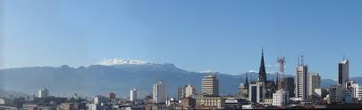

Manizales es una ciudad de la región cafetera montañosa del oeste de Colombia. Es conocida por sus eventos culturales, las calles empinadas y las vistas del volcán Nevado del Ruiz cercano. La Plaza de Bolívar central tiene una escultura de un hombre-cóndor que honra al líder revolucionario Simón Bolívar. La Catedral Basílica de Nuestra Señora del Rosario de la ciudad tiene un estilo neogótico y un mirador en su azotea. Cerca se encuentra el Palacio del Gobernador de estilo neocolonial.
Historia
Fundada en 1849 por colonos antioqueños, hoy es una ciudad con gran actividad económica, industrial, cultural y turística. Igualmente resalta por su actividad cultural en la que se destacan su Feria anual, el Festival Internacional de Teatro y numerosos espectáculos y convenciones. Manizales es denominada la "Ciudad de las Puertas Abiertas". También se le conoce como "Manizales del Alma" debido a un pasodoble taurino que lleva su nombre.
Ir a la Wikipedia